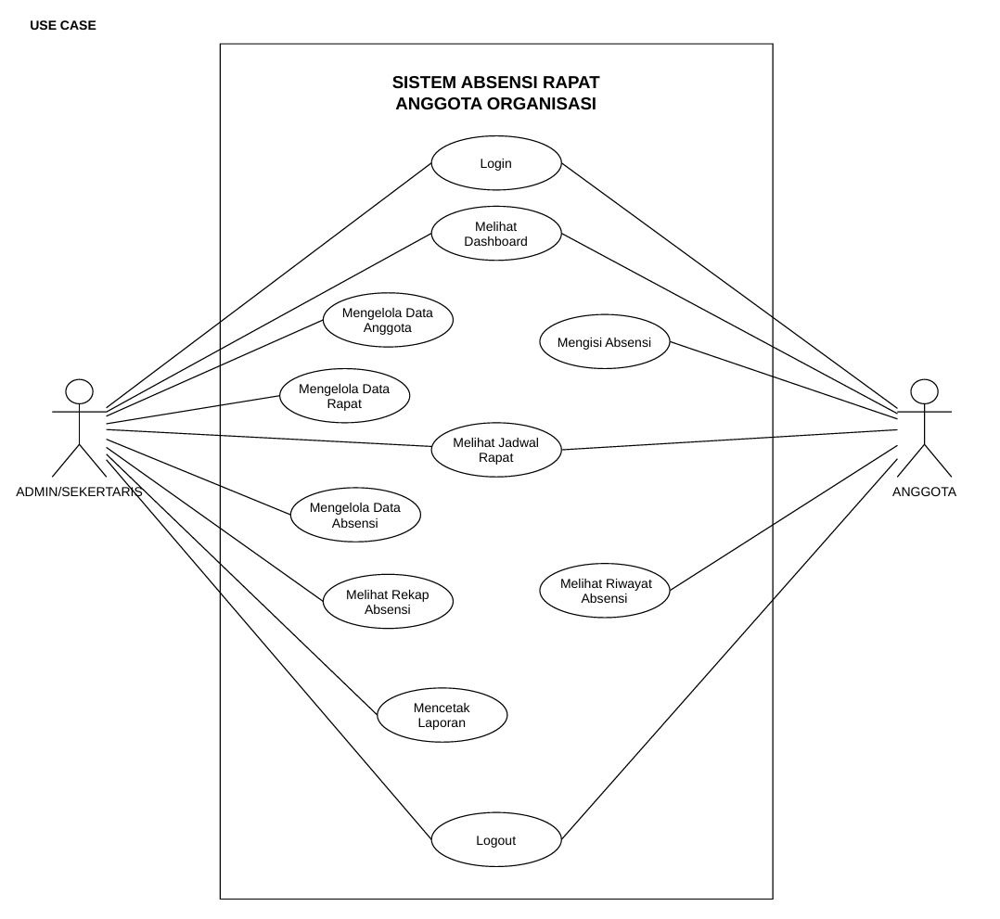
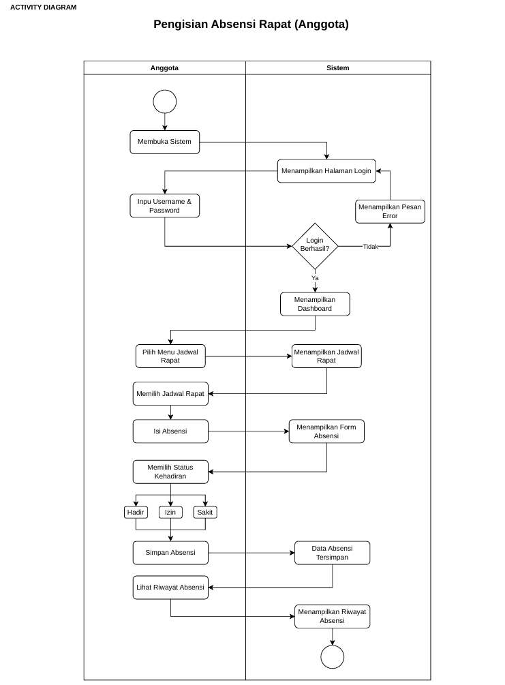
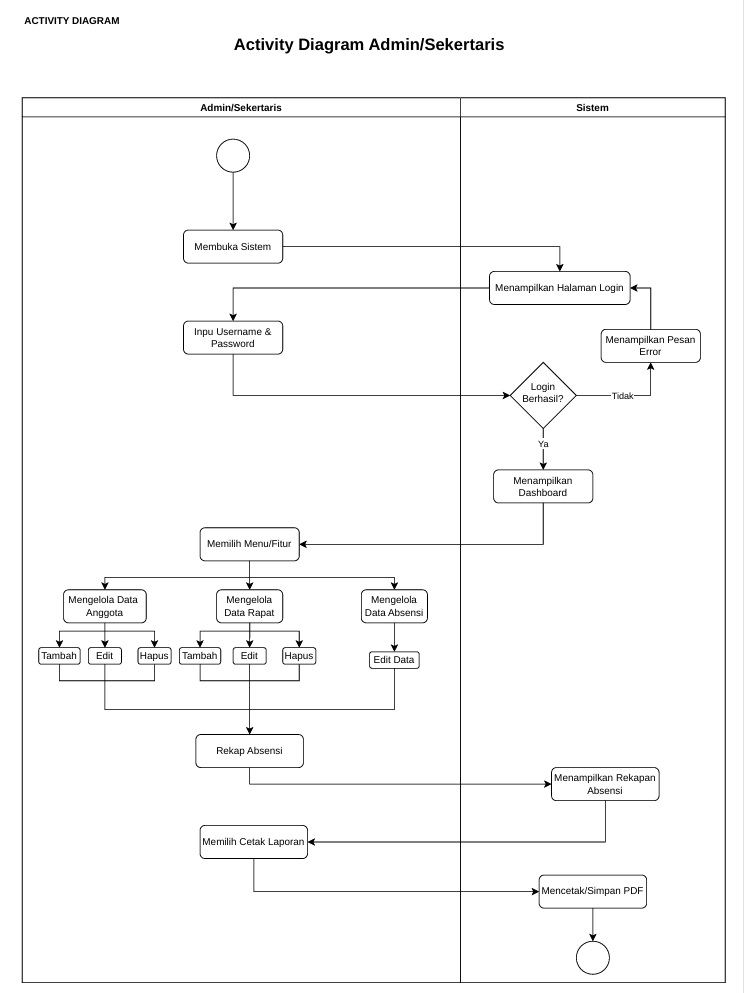
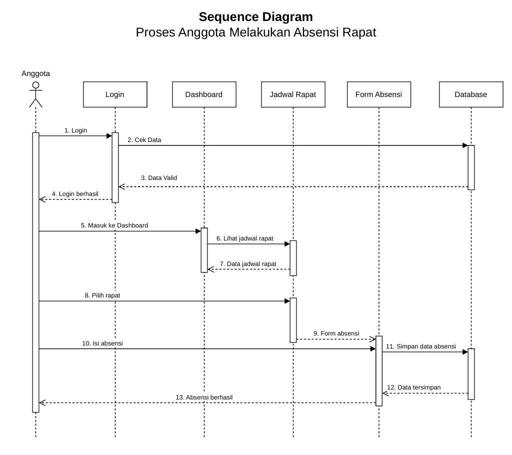
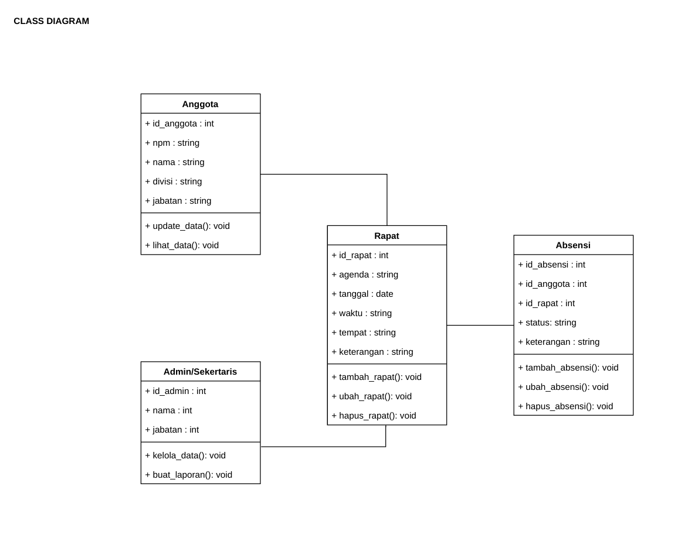
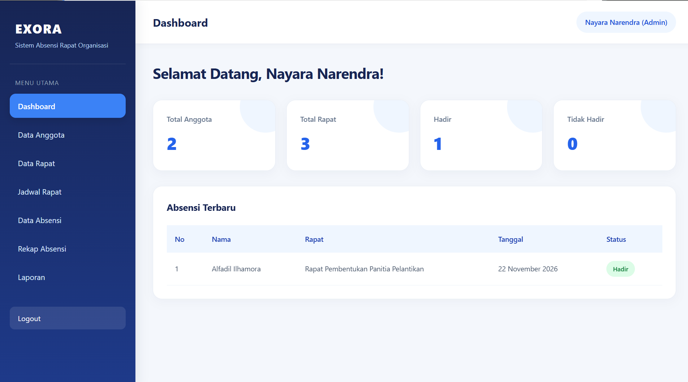
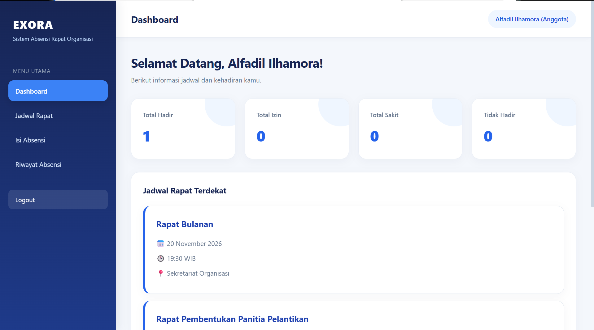

EXORA Sistem Absensi Rapat Anggota Organisasi
Perancangan arsitektur sistem, pemodelan UML, hingga implementasi antarmuka berbasis peran untuk digitalisasi pencatatan kehadiran rapat organisasi.
Latar Belakang & Solusi Sistem
Pencatatan Manual Konvensional
- Data Rawan Tercecer: Absensi masih menggunakan kertas atau pesan chat yang tidak terpusat dan sulit ditelusuri kembali.
- Rekapitulasi Lambat: Sekretaris membutuhkan waktu lama untuk menghitung ulang kehadiran setiap selesai rapat.
- Minim Transparansi Status: Sulit memantau rincian anggota yang Hadir, Izin, Sakit, atau Tidak Hadir secara cepat.
Sistem Web Terintegrasi (EXORA)
- Database Terpusat: Seluruh data anggota, jadwal rapat, dan log kehadiran tersimpan aman dan terstruktur.
- Rekap Otomatis Real-Time: Ringkasan statistik kehadiran langsung terhitung di dashboard begitu anggota mengisi presensi.
- Akses Multi-Peran: Pemisahan hak akses yang tegas antara Admin/Sekretaris dan Anggota organisasi.
Role Akses & Matriks Hak Akses
Admin / Sekretaris
Bertindak sebagai pengelola utama sistem: mengelola data anggota, jadwal rapat, validasi absensi, serta mencetak rekap laporan organisasi.
Anggota Organisasi
Pengguna akhir yang mengakses jadwal rapat aktif, melakukan pengisian kehadiran mandiri, dan memantau riwayat absensi pribadi.
| Fitur Sistem | Admin / Sekretaris | Anggota |
|---|---|---|
| Login & Logout Sistem | ✓ | ✓ |
| Kelola Data Anggota (CRUD) | ✓ | — |
| Kelola Data Rapat (CRUD) | ✓ | — |
| Melihat Jadwal Rapat | ✓ | ✓ |
| Mengisi Absensi | ✓ | ✓ |
| Mengubah Data Absensi | ✓ | — |
| Melihat Rekap Absensi Keseluruhan | ✓ | — |
| Melihat Riwayat Absensi Pribadi | ✓ | ✓ |
| Cetak Laporan Absensi | ✓ | — |
Basic Logic Setiap Role Akses
Autentikasi menggunakan username & password untuk masuk ke panel kendali.
Menambah, mengubah, atau menghapus master data anggota serta agenda, tanggal, waktu, dan tempat rapat.
Memverifikasi dan memperbarui status kehadiran (Hadir, Izin, Sakit, Tidak Hadir).
Menampilkan rekap per periode/rapat dan menyimpan atau mencetak laporan resmi.
Masuk ke dashboard pribadi untuk melihat ringkasan kehadiran.
Mengecek agenda rapat terdekat lengkap dengan tanggal, jam, dan lokasi.
Memilih jadwal rapat aktif lalu menentukan status kehadiran (Hadir, Izin, atau Sakit).
Memantau rekam jejak kehadiran dan akumulasi partisipasi pada rapat sebelumnya.
Use Case & Activity Diagram

uml-usecase.png di folder proyek.
- 2 Aktor Utama: Sistem melibatkan Admin/Sekretaris sebagai pengelola penuh dan Anggota sebagai peserta rapat.
- Akses Bersama: Kedua aktor sama-sama melakukan Login, Melihat Dashboard, Melihat Jadwal Rapat, dan Logout.
- Hak Admin/Sekretaris: Mengelola Data Anggota, Data Rapat, Data Absensi, Melihat Rekap Absensi, hingga Mencetak Laporan.
- Hak Anggota: Berfokus pada Mengisi Absensi rapat dan Melihat Riwayat Absensi pribadinya.

uml-activity-anggota.png di folder proyek.
- Autentikasi Login: Anggota membuka sistem dan menginput Username & Password. Jika gagal, muncul pesan error; jika berhasil, sistem membuka Dashboard.
- Pilih Jadwal Rapat: Anggota membuka menu Jadwal Rapat lalu memilih agenda rapat yang sedang berlangsung.
- Pengisian Presensi: Anggota menekan Isi Absensi dan memilih salah satu status kehadiran: Hadir, Izin, atau Sakit.
- Simpan & Riwayat: Data absensi tersimpan ke sistem dan langsung dapat dicek pada halaman Riwayat Absensi.

uml-activity-admin.png di folder proyek.
- Login ke Panel Admin: Admin menginput Username & Password; jika valid sistem menampilkan Dashboard utama.
- Pengelolaan Master Data: Admin dapat melakukan Tambah, Edit, maupun Hapus pada menu Data Anggota dan Data Rapat.
- Validasi Data Absensi: Admin memantau dan mengedit status data absensi anggota apabila diperlukan penyesuaian.
- Rekap & Cetak PDF: Admin membuka menu Rekap Absensi lalu memilih Cetak Laporan untuk menyimpan/mencetak file PDF.
Sequence & Class Diagram

uml-sequence.png di folder proyek.
- Validasi Login (Langkah 1–4): Anggota mengirim kredensial ke objek Login, lalu diverifikasi ke Database hingga mengembalikan respons berhasil.
- Navigasi Jadwal (Langkah 5–9): Anggota masuk ke Dashboard, mengambil data Jadwal Rapat, memilih rapat, dan membuka Form Absensi.
- Penyimpanan Data (Langkah 10–13): Anggota mengisi form, sistem menyimpan data ke Database, mengembalikan status tersimpan, dan menampilkan konfirmasi berhasil.

uml-class.png di folder proyek.
- Class Admin/Sekertaris: Menyimpan
id_admin, nama, jabatandengan operasikelola_data()danbuat_laporan()untuk mengatur data rapat. - Class Anggota: Menyimpan identitas
id_anggota, npm, nama, divisi, jabatanyang terhubung dengan jadwal rapat. - Class Rapat & Absensi: Entitas Rapat (
agenda, tanggal, waktu, tempat) berelasi dengan Absensi untuk mencatatid_anggota, id_rapat, status, keterangan.
Tampilan Dashboard Web EXORA

Selamat Datang, Nayara Narendra!

Selamat Datang, Alfadil Ilhamora!
Efisiensi Digital dalam Manajemen Rapat Organisasi
Sistem EXORA mentransformasi pencatatan manual menjadi sistem berbasis web yang terstruktur—memudahkan Sekretaris dalam mengelola data serta memberikan transparansi jadwal dan riwayat kehadiran bagi seluruh Anggota.